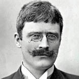

(1859 – 1952)

Yaşamı büyük sıkıntılar içinde geçen, ama yine de yazarlık tutkusunun ardından Amerika'ya giden hatta Türkiye'ye kadar gelen bir adamdı Knut Hamsun. Yaşamı boyunca Alman hayranıydı. Ülkesi Norveç II. Dünya Savaşı'nda Alman Nazi ordusu tarafından işgal edildiği halde Alman sempatisi devam edince önce kendi ülkesinde, sonra da tüm dünyada büyük tepki çekti...
Daha sonraları Knut Hamsun adını alacak olan Knud Pedersen 4 Ağuston 1859'da, Norveç'in kuzeyindeki Gudbrandsdal sınırları içindeki Vågå kasabasında doğdu. Bir terzi olan babası Peter kalabalık ailesini alarak daha kuzeye, Hamaröy kasabasına göç etti.
Yazar on beş yaşındayken Esrarengiz Adam adında küçük bir aşk romanı yazdı. Bu roman, gezginlik yıllarında tanıştığı bir kitapçı tarafından bastırıldı. Buradan ayrılınca birkaç arkadaşıyla birlikte ucuz eşyalar satmaya başladı. Kibrit, mum gibi şeyler satıyorlardı. Daha sonra ayrıldılar. Arkadaşı güneye, Knut kuzeye gitti, ama iş bulamayınca zanaat öğrenmek amacıyla bir ayakkabıcının yanına girdi.
Bir yıl sonra daha büyük, epik bir eser kaleme aldı. Henrik Ibsen'i okumuştu, onun etkisi altındaydı. Bir Karşılaşma adındaki bu kitabını da Bodö'de bir kitapçı yayımladı (1877). Daha sonra bir aşk hikâyesi daha yazdı. Kitaplarını okuyan ailesi, iş bulma zamanının geldiğini düşünerek Knut'u bir bucak müdürünün yanına yardımcı olarak verdi. Bu bucak müdürünün geniş bir kitaplığı vardı. Björnson'ın toplu eserlerini okumasına izin verilmişti. Knut heyecanla bu kitaplara sarıldı ve hepsini tekrar tekrar okudu. Bu kitapların etkisiyle Knut bir kitap daha yazdı, fakat yayıncılar basmaya yanaşmadılar. Ardından Frida adında bir köy hikayesi ve şiirler yazmaya başladı. Adını Knut Hamsund diye değiştirdi. Hikayesini tamamlayınca vapurla Kopenhag'a gitti. Önce bir kitapçıya, sonra da Norveçli bir şaire eserlerini kabul ettirme çabaları boşa çıkınca Oslo'ya döndü. Sonra göçebe olarak uzun bir yolculuğa çıktı.
Parası tükenen Hamsun, daha önceden kendisine maddi destek sağlamış olan bir tüccarın yolunu tuttu. Tüccar yine yardımını esirgemedi. Hamsun bu parayla bir oda kiralayıp daha önce yazdığı yazıların pek çoğunu yaktı. Makaleler, hikayeler yazıyor; bunları satmaya çalışıyordu. Parası tekrar tükenince aç kaldı ve bunu romanlaştırdı. Açlık (1890) romanı, şöhretinin ilk basamağı oldu. Ünlü yazar Björnson'a gidip ondan bir tavsiye mektubu aldı. 1882'de Amerika'ya gitti.
1884 yılında doktorlar yazara hızlı ilerleyen verem teşhisi koydu ve birkaç aylık ömrü kaldığını söylediler. Knut birkaç ay hasta yattı. "Ölürsem Norveç'e gömüleyim" diye düşünerek Norveç'e doğru yolculuğa çıktı. Ne kendisinin ne de dostlarının anlayamadıkları bir şekilde, yol süresince kendiliğinden iyileşti.
Norveç'e döndüğünde bir gazete ile anlaştı. Oraya makaleler yollayacak, hiç değilse böylece dinlenecekti. Çalışıyor, yazıyordu. 1885'te Mark Twain ile ilgili bir yazısında kullandığı "Knut Hamsund" takma adı, bir matbaa hatası yüzünden "Knut Hamsun" şeklinde basıldı. O da bunu düzeltmeye yanaşmadı. O tarihten itibaren ismi böyle kaldı.
1890 yılında en önemli romanı Açlık Berlin'de basıldı. Ertesi yıl Kopenhag'a gitti ve Gizemler adlı eseri yayımlandı. 1896'da dünyaca ünlü "Çığlık" tablosunun ressamı Edward Munch'la tanıştı ve onun aracılığıyla Alman yayıncılarla tanışarak kitaplarının Almanya yayın haklarını sattı. 1898'de evlendikten sonra 1899'da Rusya ve Türkiye'yi kapsayan bir geziye çıktı. 1902'de kızı Victoria doğdu ve 1904'te önce şiir, sonra da yazılarının toplu basımı yapıldı. O yıl "Houens Legat Ödülü"nü aldı. 1909'da ikinci evliliğini yaptı ve bu evliliğinden bir kızı, iki oğlu oldu.
1914'te I. Dünya Savaşı çıktığında Knut Hamsun Alman ordusunun yanında savaşa gitti. 1920 yılında Nobel Edebiyat Ödülü'ne layık görülen yazar II. Dünya Savaşı'nda da Nazi Almanyasını destekleyerek tüm dünyanın tepkisini çekti. 1945 yılında Almanya II. Dünya Savaşı'nı kaybedince Knut Hamsun bir bakımevine yerleştirildi ve tüm mal varlığına devletçe el kondu. 19 Şubat 1952 günü evinin banyosunda ölü bulunan yazarın cesedi, vasiyeti üzerine Nørholm kentinde yakıldı.
Seçme Romanları: Açlık (1890 – Varlık Yayınları, 2012), Pan (1894), Victoria (1898), Rosa (1908 – 2000), Göçebe (1909), İstanbul'da İki İskandinav Seyyah (Hilâl'in Altında), Dünya Nimeti (1917)